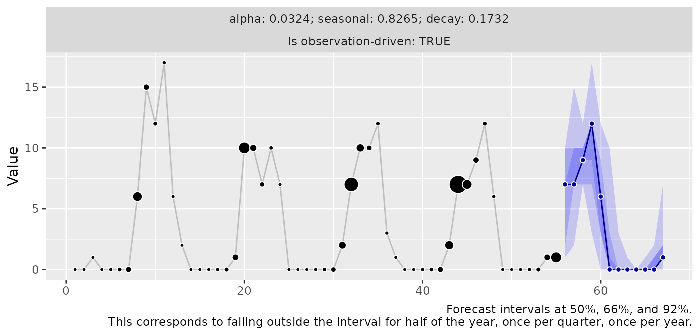
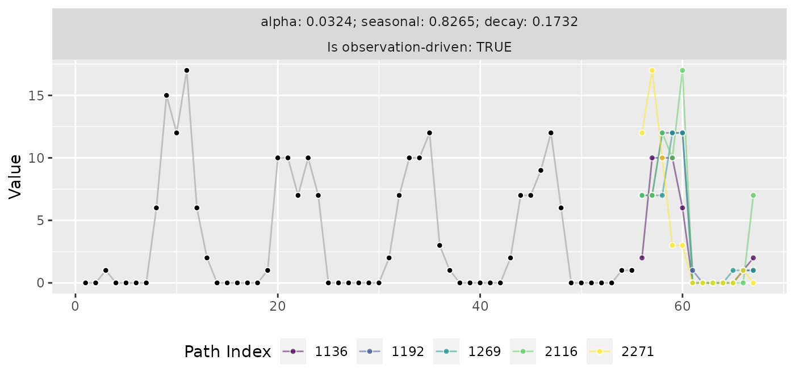

threedx (3DX)
Use 3DX to generate interpretable probabilistic forecasts by purely weighting values from the observed time series.
What’s unique about 3DX is that it can be used to derive forecasts not only based on a “latent state” but also observation-driven, drawing future realizations purely from observed values. This can be effective for count or intermittent series.
3DX builds on ideas from the NPTS model described in Alexandrov et al. (2019). Its sampling distribution is a combination of three components: The first weighs observations exponentially, the second weighs observations within each seasonal period exponentially, the third weighs the seasonal periods over time exponentially.
Get Started
Let’s generate a sparse monthly time series that has a strong seasonality.
To forecast the series, we first fit a model by learning appropriate weights given the period length of the series’ seasonality.
Afterwards, the model can be used to derive a forecast using R’s
predict() method.
library(threedx)
model <- threedx::learn_weights(
y = y,
period_length = 12L,
alphas_grid = threedx::list_sampled_alphas(
n_target = 1000L,
include_edge_cases = TRUE
),
loss_function = loss_mae
)
forecast <- predict(
object = model,
horizon = 12L,
n_samples = 2500L,
observation_driven = TRUE
)When ggplot2 is available, we can use
autoplot() to visualize the forecast object:

The native output of a 3DX model are forecast sample paths, which can
be accessed via forecast$paths. Visualize (a few of) them
instead of quantile predictions by specifying the method
"paths":
autoplot(forecast, method = "paths", n = 5)